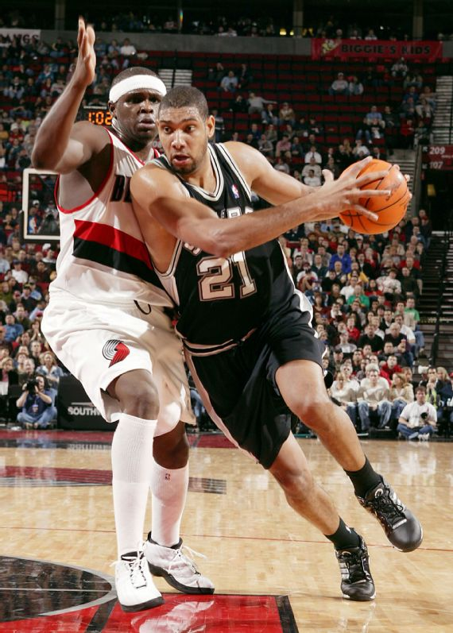

Top1 Michael Jordan
O maior jogador de todos os tempos. Jordan liderou os Bulls em seis campeonatos da NBA, ganhando seis prêmios de MVP das Finais e cinco honras de MVP da temporada regular, ao mesmo tempo em que se tornou um ícone global dentro e fora das quadras. O brilhantismo de Jordan em ambos os lados da quadra definiu uma geração de basquete e estabeleceu um novo padrão para os jogadores que seguiram seus passos. Seu jogo transcendeu o esporte.
30,1 PPG, 6,2 RPG, 5,3 APG, 2,3 SPG

Top2 Lebron James
Com 6-9 anos e pesando mais de 250 libras com uma vertical de 40 polegadas, o jogo de James é construído com força, mas sua habilidade de passe pode ser sua habilidade mais forte. O quatro vezes MVP e tricampeão reinventou a forma como o auge de um atleta deve ser visto; ele colocou o Lakers no meio de uma busca pelo título aos 35 anos, jogando em sua 17ª temporada. Seu bloqueio no jogo 7 das finais de 2016 para ajudar a completar uma recuperação de 3 a 1 contra um time dos Warriors que venceu 73 jogos encapsulará para sempre sua vontade de vencer.
27,1 PPG, 7,4 RPG, 7,4 APG, 1,6 SPG

Top3 Kareem Abdul-Jabbar
Ninguém na história da NBA pode igualar a longa lista de conquistas de Abdul-Jabbar. Ele ganhou um recorde de seis prêmios MVP e foi 19 vezes All-Star. Ele ganhou seis campeonatos – com o primeiro e o último com 17 anos de diferença – e foi nomeado para 15 times All-NBA, com 10 seleções para o time principal. Seu skyhook imparável permitiu que ele marcasse mais pontos do que qualquer outro jogador na história da liga e, embora ele não fosse chamativo, provavelmente nunca houve ninguém melhor.
24,6 PPG, 11,2 RPG, 3,6 APG

Top4 Bill Russel
O maior vencedor da história do basquete, Russell conquistou 11 títulos em 13 anos, transformando o Celtics em um rolo compressor defensivo. A perspicácia defensiva e a determinação de Russell fizeram dele o contraponto perfeito para Wilt Chamberlain, bem como um dos jogadores de sua época que não teria parecido deslocado nas gerações posteriores. Essas qualidades também o ajudaram a ganhar cinco prêmios MVP e 11 seleções All-NBA.
15,1 PPG, 22,5 RPG, 4,3 APG
Top5 Magic Johnson
Johnson revolucionou o jogo, entrando na liga como o armador mais alto da história da liga, com 2,06 metro. Ele foi um vencedor lendário, um passador transcendente, um destaque instantâneo e um triplo-duplo esperando para acontecer. Sem Johnson e sua rivalidade de longa data com Bird e o Celtics, a NBA pode não estar onde está hoje. O carismático Johnson levou o “Showtime” Lakers a nove finais da NBA, e eles ganharam cinco títulos. Seus contra-ataques e passes inesperados catapultaram a NBA de uma época em que os jogos das finais não eram transmitidos ao vivo para o jogo global que é hoje.
19,5 PPG, 7,2 RPG, 11,2 APG, 1,9 SPG
Top6 Wilt Chamberlain
Chamberlain estava realmente à frente de seu tempo. Seus números – incluindo a pontuação recorde da NBA de 100 pontos em um único jogo e uma média de 50 pontos por jogo durante uma temporada inteira – são míticos. A única razão pela qual ele não está no topo da lista dos maiores de todos os tempos é que ganhou “apenas” dois campeonatos da NBA.
30,1 PPG, 22,9 RPG, 4,4 APG

Top7 Larry Bird
Bird e Magic Johnson revitalizaram a NBA – e a rivalidade Celtics-Lakers. Bird levou Boston a cinco finais da NBA e três campeonatos com uma mistura de arremessos, passes e seu senso de jogo. Ele foi o MVP da liga em três temporadas consecutivas (1984-86), algo que apenas Wilt Chamberlain e Bill Russell conseguiram. Até o surgimento de LeBron James, Bird era aclamado como o melhor atacante de todos os tempos.
24,3 PPG, 10,0 RPG, 6,3 APG, 1,7 SPG
Top8 Tim Duncan
Talvez a única crítica percebida no jogo de Duncan tenha sido o fato de ele ser chato. Ele era conhecido como "O Grande Fundamental", dominando por quase duas décadas em ambas as extremidades da quadra com a simplicidade de um livro didático, como seu arremesso de médio alcance e defesa de posição perfeita. Mais do que tudo, Duncan foi um dos melhores vencedores, levando os Spurs a cinco títulos e 1.001 vitórias na temporada regular, o máximo para qualquer jogador com um time na história da NBA.
19,0 PPG, 10,8 RPG, 3,0 APG, 2,2 BPG
Top9 Kobe Bryant
Apesar de todas as suas conquistas estatísticas – os cinco campeonatos, o jogo de 81 pontos, a final de 60 pontos, o MVP da liga em 2008, as 20 temporadas, todas com a mesma franquia – o legado duradouro de Bryant é sua vantagem mental e desejo ardente. para dominar o esporte. A “mentalidade Mamba” tornou-se mais do que um bordão kitsch depois da morte de Bryant; agora é um modelo de como perseguir seus sonhos. Ele estará para sempre na pequena lista de jogadores que você gostaria de dar a última tacada com o jogo em jogo.
25,0 PPG, 5,2 RPG, 4,7 APG, 1,4 SPG, 1,4 3s PG

Top10 Shaq
O center Hall da Fama transformou o jogo com uma combinação de agilidade, explosão e tamanho, como a liga nunca tinha visto. Quatro vezes campeão da NBA e três vezes MVP das finais, O'Neal teve média de duplo-duplo durante uma carreira que durou quase duas décadas. O'Neal se tornou All-Star 15 vezes e ganhou o prêmio MVP de 1999-2000. O grande homem divertido usou sua personalidade descomunal para se tornar um vendedor e analista global após se aposentar.
23,7 PPG, 10,9 RPG, 2,3 BPG